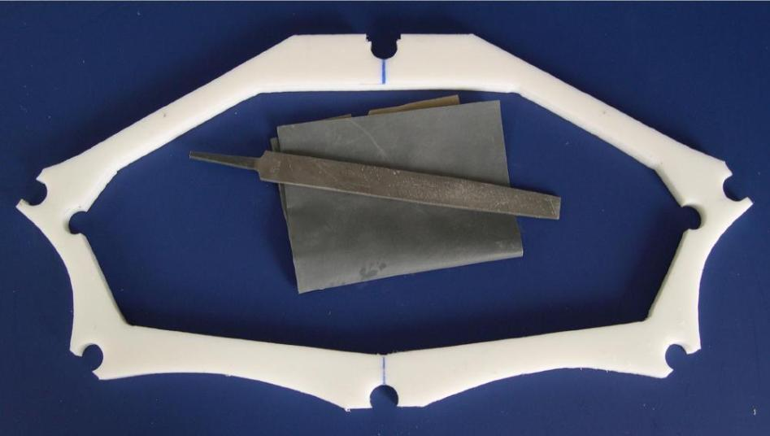

| Cross Sections | Menu Previous Page Next Page |
|  | |
|
Finished cross section - The outside and inside edges of the cut surface should be filed and sanded to smooth out the edge. No sanding or finishing is required on the surface of the HDPE. The "snap" connections between the cross section and stringers may require additional attention. |
|